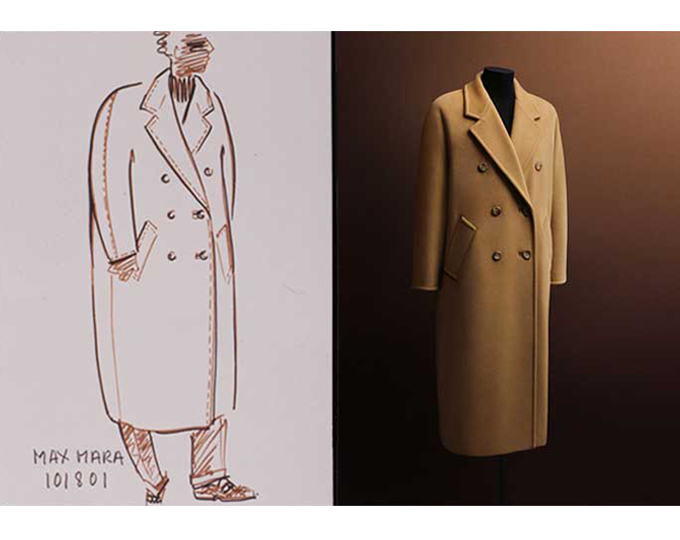

홈 > 브랜드 매거진 > 막스마라
막스마라
막스마라(MaxMara)는 1951년 아킬레 마라모티가 설립한 이탈리아 여성 패션 그룹이다.
산업 분야 패션·럭셔리 · 공개 등급 자료 기반 · 브랜드 평가 4.3 ★

한눈에 보는 브랜드
막스마라(Max Mara)는 1951년 아킬레 마라모티가 이탈리아 레조에밀리아에서 세운 여성복 그룹이다. 프랑스 오트쿠튀르의 감성을 산업적 재단 기술로 옮겨 이탈리아 고급 기성복(프레타포르테)의 길을 연 곳으로, 남성 코트 양식을 여성복에 들여온 카멜 코트와 테디베어 코트가 대표한다.
마라모티 가문이 비상장으로 운영하며, 약 105개국에서 10여 개 메인 브랜드와 60여 컬렉션, 5,500여 명 규모로 사업을 펼친다.
브랜드 관점
막스마라를 읽는 핵심은 럭셔리 기성복(RTW) 안에서의 위치다. 로로피아나·브루넬로 쿠치넬리 같은 상위 기성복군에 들면서도, 한 벌의 코트를 아이콘으로 끌어올린 점이 다르다.
1981년의 101,801 코트와 2013년 등장한 테디베어 코트는 모델명·실루엣 자체가 자산이 된 시그니처다. 1951년 미국식 산업 공정을 유럽 재단에 접목해 이탈리아 기성복을 양산 가능한 형태로 만든 선구적 행보가 토대이며, 비상장 가족경영은 분기 실적보다 코트라는 장기 자산에 집중하게 하는 함의를 갖는다.
한국에서도 카멜 울·캐시미어 코트가 겨울 외투의 기준 품목으로 꾸준히 거래된다.
시작과 성장
법학을 전공한 아킬레 마라모티는 어머니와 증조모에게서 이어받은 재단 감각을 바탕으로 1951년 레조에밀리아에서 콘페치오니 마라모티라는 이름으로 출발했다. 그는 프랑스 오트쿠튀르의 미감을 미국식 산업 재단 기술로 구현해, 고급 코트를 양산하는 이탈리아 기성복이라는 개념을 도입했다.
1957년 본사를 옮기며 사명을 막스마라로 바꿨고, 1960년대에는 스포트막스를 비롯한 라인을 더해 다브랜드 체제의 기틀을 닦았다. 1981년 디자이너 안마리 베레타가 카멜색 울·캐시미어 외투인 101,801 코트를 선보여 세계적 상징이 됐고, 1998년 마누엘라 랩 코트, 2013년 테디베어 코트로 아이콘 계보를 이었다.
2005년 창업자가 타계한 뒤에도 가문이 경영을 이어 글로벌 시장으로 확장했다.
브랜드 아이덴티티
막스마라의 가치관은 유행보다 오래가는 절제된 우아함, 그리고 한 벌을 평생 입게 하는 완성도에 있다. 워드마크형 로고는 장식을 덜어낸 세리프 활자로 정제된 인상을 전한다.
카멜과 뉴트럴(크림·차콜·네이비) 중심의 색조는 컬렉션을 관통하는 시각 코드다. 일하는 성숙한 여성, 즉 자기 취향이 분명한 도시 여성을 핵심 고객으로 삼으며, 과장 없이 차분하고 지적인 보이스로 말한다.
문학·예술에서 길어 올린 시즌 테마로 메시지를 일관되게 쌓는다.
제품과 서비스
대표 품목은 카멜색 울·캐시미어 외투다. 1981년 101,801 코트, 1998년 마누엘라 랩 코트, 2013년 테디베어 코트가 아이콘 라인을 이루며, 스포트막스·위켄드·에스 막스마라 등 라인별로 소재와 가격대가 나뉜다.
한국에서는 울·캐시미어 코트가 정가 약 208만 원대, 할인가 약 99만 원대 등으로 백화점·공식몰·온라인 편집숍을 통해 유통된다.
현재 상태
막스마라는 이탈리아 레조에밀리아에 본사를 둔 비상장 패션 그룹으로, 마라모티 가문이 소유·경영한다. 루이지 마라모티 회장 등 2세대가 그룹을 이끌며 크리에이티브 디렉터는 이언 그리피스다.
약 105개국에서 5,500여 명, 10여 개 메인 브랜드를 운영하고, 2024년 연 매출은 약 21억 달러대로 추정되나 비상장 특성상 공식 수치는 공개되지 않았다.
타임라인
BI/CI 변천사
함께 읽을 브랜드
 패션·럭셔리 · 매거진 완성코치
패션·럭셔리 · 매거진 완성코치코치는 실용적 가죽 제품을 일상적 럭셔리의 영역으로 끌어올린 브랜드다. 과시적 명품보다 접근 가능한 품질과 라이프스타일 이미지를 통해 오래 쓰는 가방의 감각을 브랜드...
 패션·럭셔리 · 매거진 완성프라다
패션·럭셔리 · 매거진 완성프라다프라다는 아름다움을 익숙한 화려함보다 지적인 긴장감으로 표현하는 브랜드다. 소재와 형태, 절제된 색감은 패션을 단순한 장식이 아니라 관찰과 해석의 대상으로 만든다.
 패션·럭셔리 · 매거진 완성스와치
패션·럭셔리 · 매거진 완성스와치스와치는 시계를 고가의 정밀기기에서 매일 바꿔 착용할 수 있는 패션 언어로 전환했다. 시간을 알려주는 기능보다 색, 그래픽, 컬렉션, 가벼운 가격대가 브랜드 경험의...
 패션·럭셔리 · 편집 검수디젤
패션·럭셔리 · 편집 검수디젤디젤(Diesel)은 1978년 렌조 로소가 이탈리아 브레간체에서 설립한 데님 중심의 컨템포러리 패션 브랜드다. 도발적이고 실험적인 디자인으로 데님 헤리티지를 재해석...
 패션·럭셔리 · 편집 검수조르지오 아르마니
패션·럭셔리 · 편집 검수조르지오 아르마니조르지오 아르마니(Giorgio Armani)는 1975년 밀라노에서 설립된 이탈리아 럭셔리 패션 하우스이다.
 패션·럭셔리 · 자료 기반돌체앤가바나
패션·럭셔리 · 자료 기반돌체앤가바나돌체앤가바나(Dolce & Gabbana)는 1985년 도메니코 돌체와 스테파노 가바나가 설립한 이탈리아 럭셔리 패션 하우스이다.
 패션·럭셔리 · 매거진 완성루이비통
패션·럭셔리 · 매거진 완성루이비통루이비통은 여행가방에서 출발했지만, 이동의 기능을 럭셔리한 삶의 상징으로 확장했다. 브랜드의 헤리티지는 물건을 담는 도구가 아니라 이동하는 사람의 취향과 지위를 표현...
 패션·럭셔리 · 매거진 완성몽블랑
패션·럭셔리 · 매거진 완성몽블랑몽블랑은 필기구를 기록의 도구에서 성취와 품격의 상징으로 끌어올린 브랜드다. 만년필은 기능 제품이지만, 브랜드가 축적한 이미지는 서명, 의사결정, 지적 권위 같은 장...